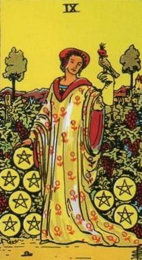
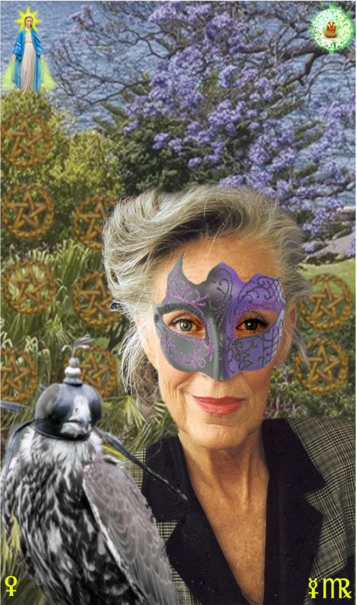
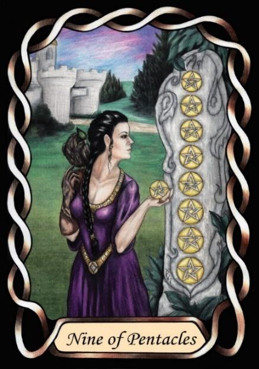

Nine of Pentacles



Sign |
|
Six – Age |
|
Sign Ruler |
|
Element |
Earth: practical |
Modality |
|
Symbol |
Virgin |
Decan |
|
Decan Ruler |
|
Time |
Aug 4 - Sep 14 |
Enigma Virgo II
A Journeyman of Infirmity and Age surrounds herself with Venusian beauty, and indulges in hobbies previously denied, attempting to recapture the beauty of youth, and to fill their fading years with elegance.
Goldschneider Personology
The Venus nature of this decan results in an Air of mystery, with secrets and a life of quirks and idiosyncrasies (masks). They can be quite difficult to comprehend, and are best left with freedom to do their own thing in their own way, without judgement.
RWS Imagery
An elegant Virgo-two takes her ease alone in her garden, indulging in her exotic hobby of falconry.
Pymander Imagery
The Falcon is retained as a sign of unusual hobbies. The woman is aged, indicative of Virgo, but elegant. A mask is added to emphasize the Enigma aspect.
Summary
Represents elegance, mystery, and self-indulgence in aging.